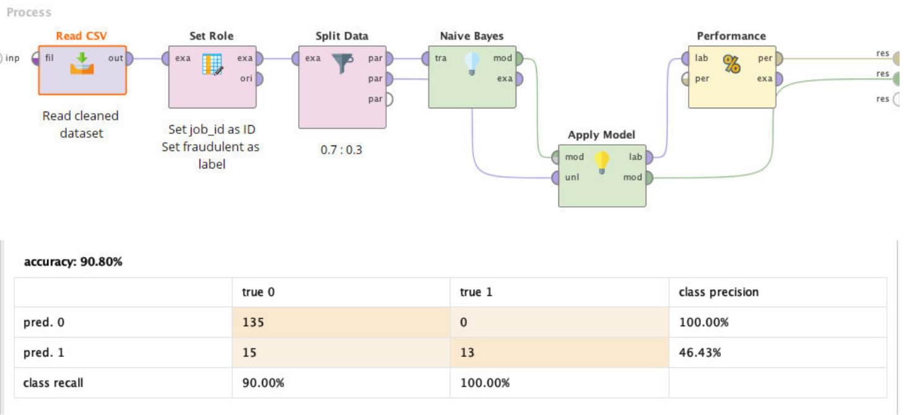
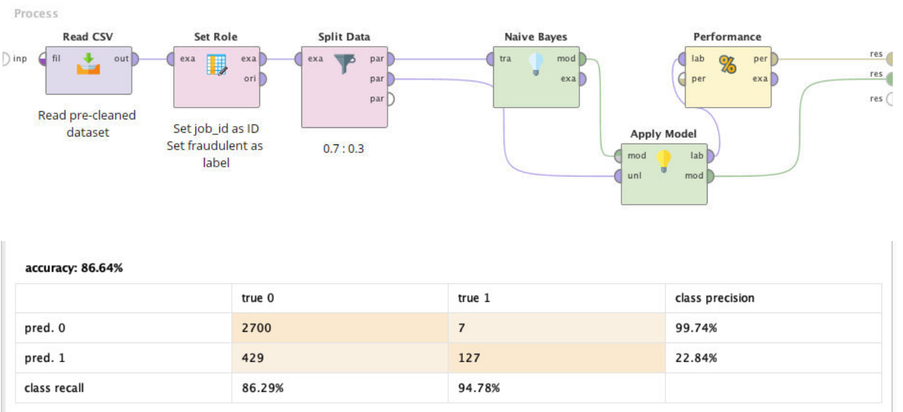
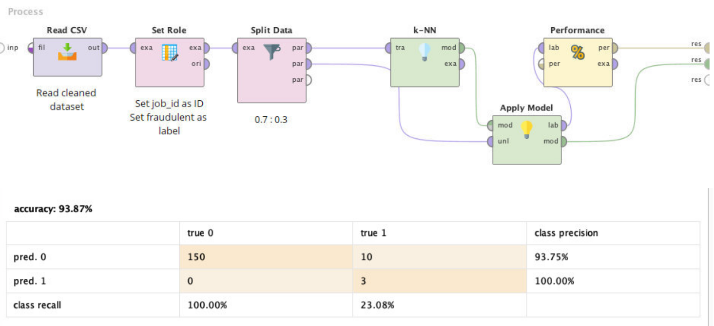
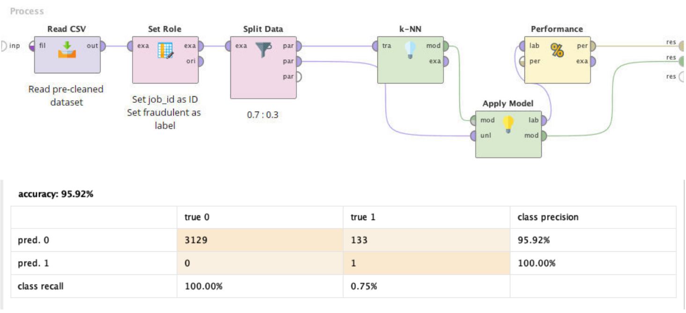

We start the data analysis by looking for missing values and handle them. The dataset we used is highly unbalanced. It is because of missing values due to the fact that fraudsters was not doing their job well to disguise themselves.

To solve this issues, we decide to analyse data that contained all significant information. Then, we trained our cleaned dataset with two different classification models.

After we do data cleaning, our new dataset consists of 774 columns. We would like to start analysing with the target variable (fraudulent):

Target variable has imbalanced class distribution. Positive class (fraudulent = 0) is significantly higher that negative class (fraudulent = 1). The imbalanced class distributions can influence the performance of our models negatively.
It is beneficial to explore our variables before trying to build a model. Firstly, we discover the variables that only have two values or binominal attributes.

The remaining categorical variables that have more than two values is also called as polynominal attributes.
Binary Categorical Variables

There is a high imbalance in “telecommuting” and “has_company_logo” variables. Most of the job advertisements have a company logo and similarly, true for telecommuting positions.
It is better to check how the target variable (fraudulent) changes according to the binary variables.

From the analysis above, it shows the binary variables have an effect on the target variable.
Polynominal Categorical Variables
There are 14 variables that includes in this category. But, we can only show the analysis of three variables only which are “employment_type”, “required_experiment” and “required_education”.
Now, we can check the influence of polynominal variables towards our target variable.

For other variables, we cannot show the analysis because of too many different input by every variables.
Conclusion
From the explatorarory data analysis, we decide to not exclude any variables. It is because, for every variables, it will bring impact for our model. To continue our analysis, we will use RapidMiner.
We chose a Naive Bayesian model because it is easy to compute and because the variables in the given dataset are all independent of each other. It is the primary assumption before doing our Naive Bayesian model.
As we can see that Bayes Navesian works really well with the given dataset, with the accuracy rate 90.80%. However, there is still a vast majority of the dataset which is 9.2% cannot be correctly classified. This means our job seeker still misjudged one tenth of job advertisement out there. We will attempt to improve the result by using our initial dataset which is pre-cleaned dataset.
As you can see, there is slightly different result between this two models. The model that use clean dataset is more accurate compared to our initial dataset. We can assume this model will bring more disadvantage if the data entries has many missing values in it.
For our second model, we chose a kNN model.
As we can see that kNN model works really well compared to Naive Bayes, with the accuracy rate 93.87%. We will also attempt to improve the result by using our initial dataset which is pre-cleaned dataset.
Compared to Naive Bayes model, kNN model give more accuracy result even though the dataset has many missing values. For overall, kNN model contribute a higher percentage for our job seeker to avoid being persuaded with fake job advertisement.